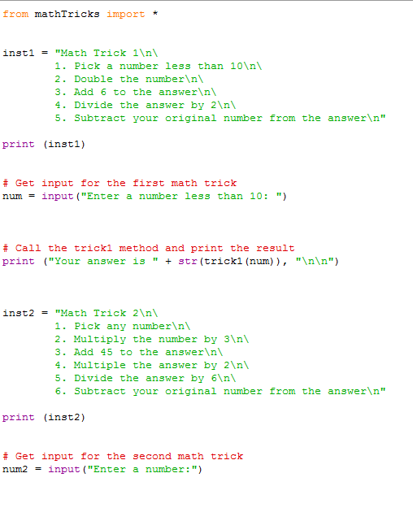
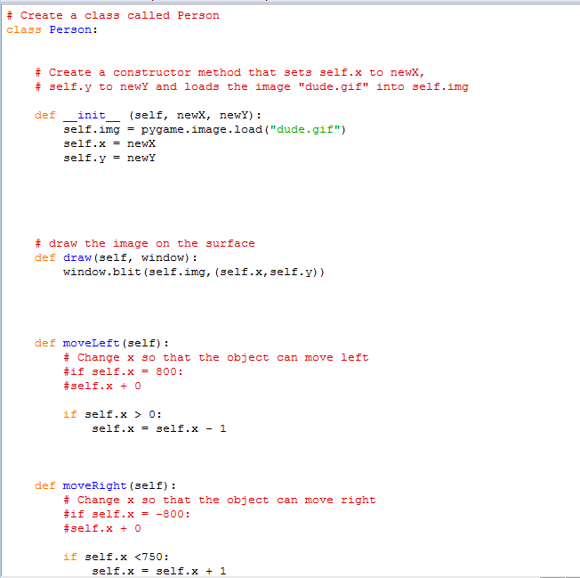
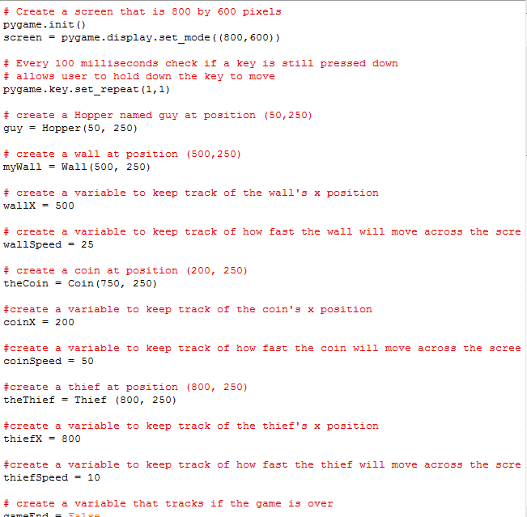
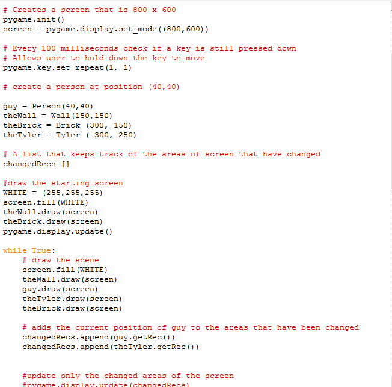
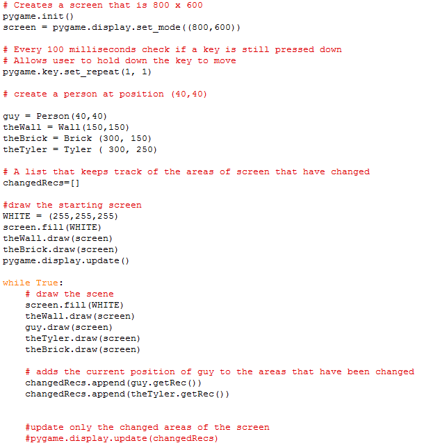
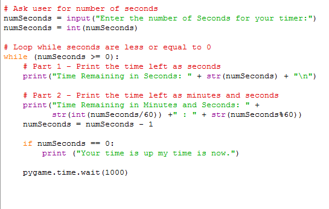
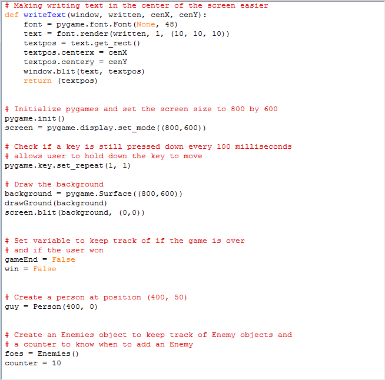
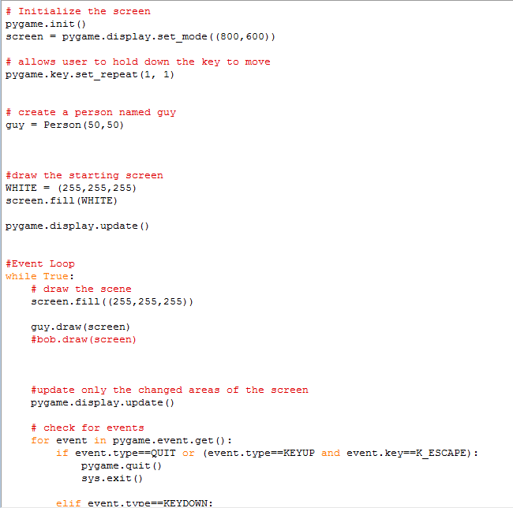

Python Content

Unit 1:
MathRunner Lab:
The point of the MathRunner lab was to write specific mathetmatical commands so that you would type in any number into a function and the output would always be a result of the input going through a specific set of math expressions.
Person Lab:
The point of this lab was to just draw a person on the screen and make him move around. It was fairly simple, because all we had to do was just make it so that when wasd was pressed the person's x and y coordinates would change accordingly. ONe challenge was to make it so that the person couldn't move off the screen, but once we got how the screen coordinates work in python it became a trivial task.
Concepts Learned
- Variables: We did some stuff with inputting variables by asking questions, and we learned how to return the info.
- Math: We learned how to type basic mathematical expressions by adding int() and float() for fractions
Unit 2:
LineRunner Lab:
LineRunner was basically just a guy running across the screen jumping over bricks and getting coins. It was basically like a discount mario. There were some challenges, like making the guy jump a certain height and then getting him back down, and coding coins and thieves who are out there to either help or hurt you. There wasn't a game winning score or whatever, it was just a game that ran until you died.
WallRunner Lab:
This lab was just supposed to show us how to get collisions using GetRec. We didn't really go in depth with the code and it was always already completed in the labs for us, but yeah, we learned how to do collisions.
Concepts Learned
- If statements: We learned how to write if and else statements.
- Collision: We learned how collision works, but we didn't really know how to code it
- For statements: We didn't really apply this in the labs, but we learned about printing stuff in words.
- Loops: We learned how to do loops or something like that.
- Costumes: We learned how to make it so that the costume changes if a key is pressed or something
- Spawning: We learned how to make lists that spawned enemies at random.
Unit 3:
GroundRunner Lab:
This lab was the hardest lab up to this point. You had to make a game where you move around collecting a coin that spawns randomly, and you have a certain amount of time to collect a certain amount of coins to win. It was a little hard doing the changeRecs stuff but I had some help. The rest of the code was basically copy and pasting or using pieces of code that the teacher gave us to create the rest of the game.
Timer Lab:
The point of this lab was to make a timer that would constantly count down until it went to 0. This lab was probably the easiest of the bunch because it was already done for us LUL.
Concepts Learned
Unit 4:
DodgeRunner Lab:
This lab was basically given to us by the teacher because he basically told us everything we needed to write. Apparently the most challenging thing was making the ground, then we made it so that the enemies spawned randomly on the sides of the screens, and the goal for the player is to just run across the screen vertically into the patch of grass on the other side.
CostumeRunner:
This lab was basically an intro to unit 4, and basically all we did was make the guy's costume change after you press wasd keys. Basically when you press w my guy would look like hes jumping up, when you press s my guy would be stepping down, a would make my guy slide left, and d was just a reversed image of the "a" image.
Concepts Learned